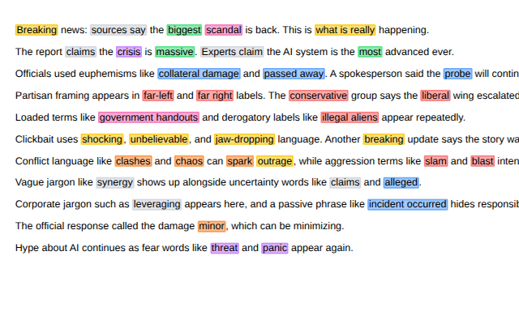

ClearFrame scans pages progressively, remembers badge counts per URL, and highlights biased or loaded language with neutral alternatives.
For build steps, test fixtures, and term types, see GitHub.
Highlights biased or loaded language and shows neutral alternatives

ClearFrame scans pages progressively, remembers badge counts per URL, and highlights biased or loaded language with neutral alternatives.
For build steps, test fixtures, and term types, see GitHub.